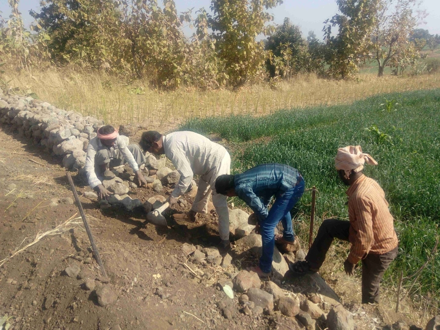

Survival Edge Technology

I believe neither in God nor in Utopia. I neither think that there is any human destiny nor that there is any pre-determined purpose in nature. I hold instead that everything depends on sheer chance and so life is, always has been and always will be unpredictable. Thus, for me if there is any sin it is that of trying to make life predictable by binding it into the tyrannical confines of religion, ideology and private property and using society and the environment as dustbins for the negative side effects of such sinning. It is this sin that is frequently visited on us in the form of covert and overt wars, mayhem and murder and environmental disasters. So, I believe in nothing and am consequently also a sceptic because I am inherently suspicious of grand theories whether religious or secular. However, since I do not expect anything from life, I am nevertheless a cheerful sceptic!